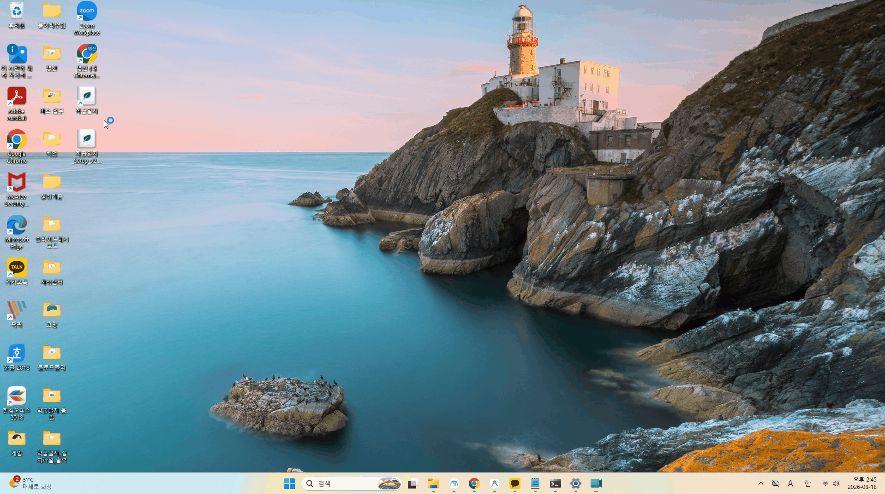
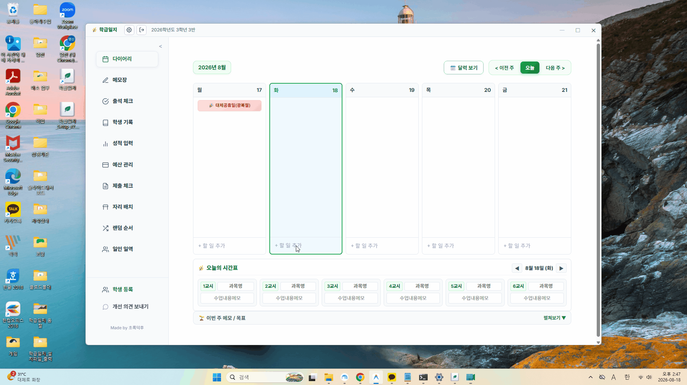
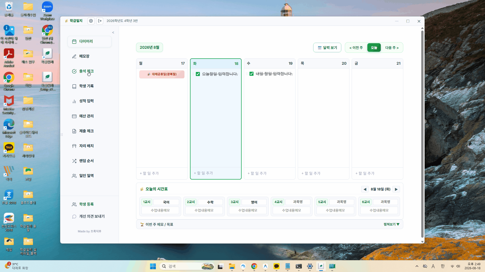
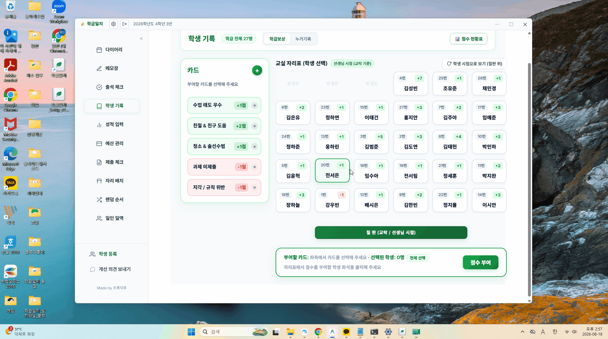
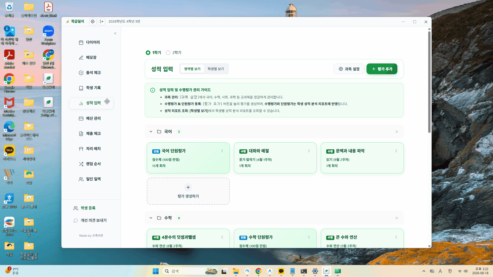
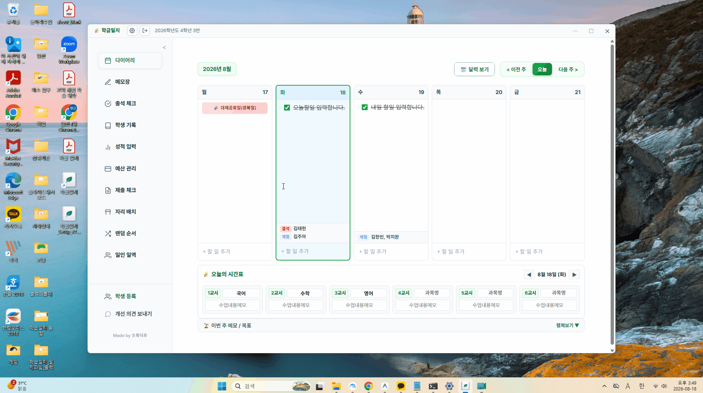

학급일지 VER 2
출석 체크, 다이어리, 학생 누가 기록, 성적 입력, 학급 예산, 과제 제출 체크까지...
여기저기 흩어져 있던 학급 기록을 한 화면에 쏙! 외부 서버 없이 내 컴퓨터 안에만 안전하게 보관하는 선생님 맞춤형 스마트 학급일지입니다.
💡 이 프로그램 하나로 할 수 있는 일
오늘 할 일 적고 완료 체크! 날짜별 메모와 학급 알림장을 달력과 함께 직관적으로 정리합니다.
학생 출결 기록은 물론, 월별 통계 확인과 결석계·교외체험학습 서류 양식 및 엑셀 다운로드를 지원합니다.
상담 일지, 관찰 기록, 특이사항을 학생별로 모아두고 한눈에 누적 추적할 수 있습니다.
단원평가 점수 관리, 학급 운영비 항목별 퍼센트 잔액 차트, 제출물 수합 여부를 손쉽게 체크합니다.
자리 배치, 랜덤 번호 뽑기, 1인 1역 관리 등 교실에서 매일 필요한 유틸리티가 모두 내장되어 있습니다.
쓰지 않는 기능은 설정에서 끄고, 자주 쓰는 메뉴는 드래그해서 앞으로 옮겨 나만의 화면을 완성합니다.
🚀 이렇게 사용해요 (초간단 3단계)
상단의 다운로드 버튼을 눌러 구글 드라이브에서 학급일지 프로그램을 내려받아 실행합니다. 복잡한 설치나 회원가입 없이 즉시 내 학급을 시작할 수 있습니다.
'학생 관리' 메뉴에서 명단을 한 번에 붙여넣거나 엑셀 양식을 업로드하여 전교생 명단을 순식간에 등록합니다.
다이어리와 출결 체크를 기본으로, 내가 필요한 기능만 켜서 출근 후 아침 루틴으로 활용하세요.
📸 실제 화면 및 작동 시연
💡 이미지를 클릭하면 실제 크기로 시원하게 확대해서 보실 수 있습니다.






🔒 개인정보 안심 보관 & 백업 안내
아이들의 출결, 상담 일지, 성적 등 민감한 개인정보가 외부 서버에 전송되거나 저장되지 않습니다.
오직 선생님의 컴퓨터 브라우저 내부 저장소에만 암호화되어 보관되므로 정보 유출 걱정 없이 안심하고 쓰실 수 있습니다.
컴퓨터를 교체하거나 브라우저 쿠키를 청소해도 기록이 날아가지 않도록, 구글 드라이브 1초 백업 기능을 지원합니다. 클릭 한 번으로 내 구글 드라이브에 안전하게 백업하고 복원할 수 있습니다.
프로그램을 처음 실행할 때 파란색 'Windows의 PC 보호' 창이 나타날 수 있습니다.
이는 초등교사가 비영리로 직접 제작하여 비싼 기업용 디지털 서명 인증서를 등록하지 않아 발생하는 정상적인 윈도우 기본 알림입니다.
화면의 [추가 정보] → [실행] 버튼을 차례로 클릭해 주시면 정상 실행됩니다. (악성코드 없는 안전한 파일입니다 🌱)